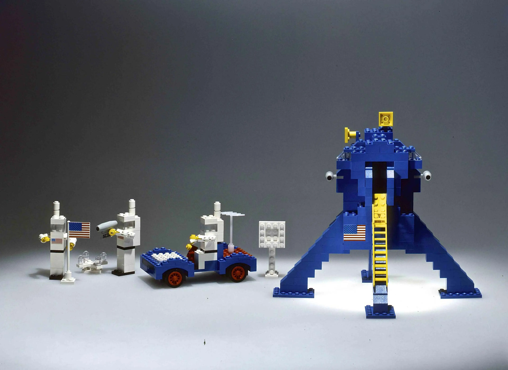
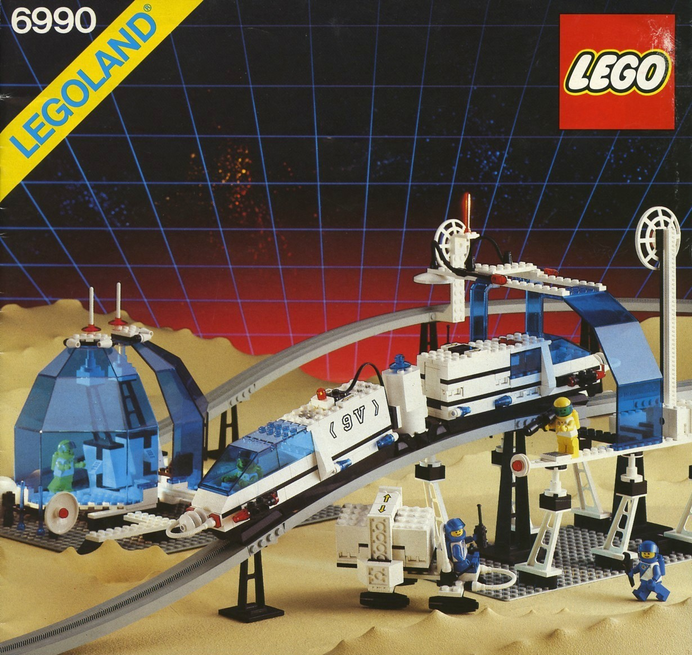
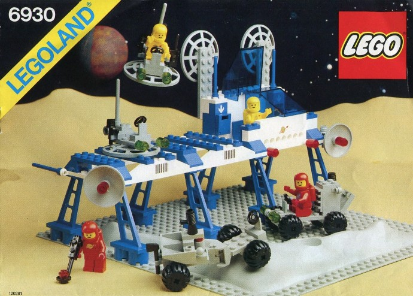
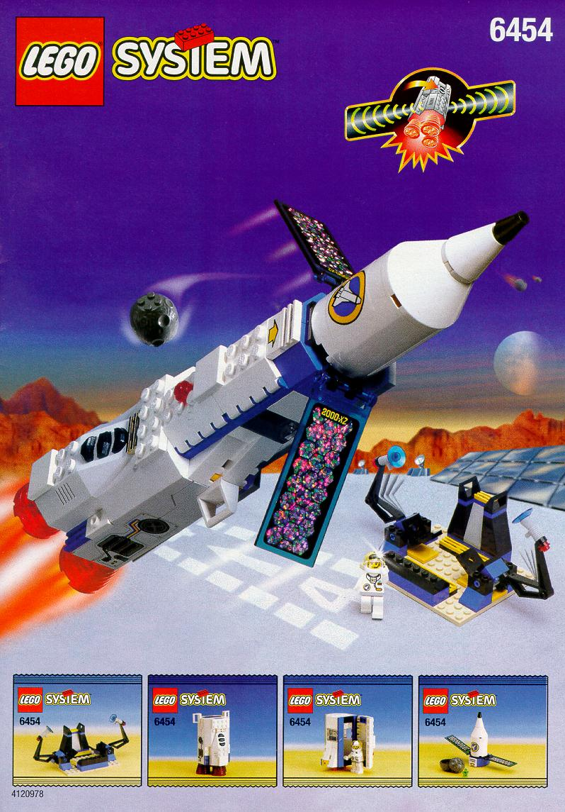

Early Space
During this period, LEGO released a few space‐themed sets well before the official “Space” branding. These sets were built using standard bricks in basic colors, as specialized pieces and mini-figures had not yet been developed.
1964-1973
1978-1987

Classic Space
The first official LEGO Space sets arrived in 1978 (alongside Castle and Town) and introduced more complex builds focused on space exploration like spaceships, bases, and rovers with a blue/grey/white palette and translucent yellow windscreens. By the mid-1980s the palette shifted and mini-figures in new colors (black/blue) appeared.
Futuron
In 1987 LEGO introduced the Futuron sub-theme, continuing the white/blue scheme of Classic Space but with redesigned minifigures (four suit colours), new helmets with transparent blue visors, and a major set (Monorail Transport System) emphasising a futuristic vision of space travel.
1987-1990
1990-1991
M:Tron
The M:Tron theme debuted as a rescue/mining faction, featuring magnet-based vehicles and a red/black/grey colour scheme with transparent neon green canopies. It was the last theme released under the “Legoland” branding before LEGO switched to “LEGO System”.
Blacktron II
Blacktron returned in a revamped form as Blacktron Future Generation (often called Blacktron II) with a black/white/neon green palette, redesigns of minifigures and newer cockpit globes, and fewer modular connections than the original Blacktron theme.
1991-1993

1993-1994
Ice Planet 2002
In 1993 the Ice Planet 2002 theme launched, depicting exploration on an icy planet. It featured a blue/white palette, transparent neon orange canopies and chainsaws, skis for vehicles and minifigures, and introduced a named character (Commander Cold) and a female minifigure.